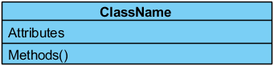
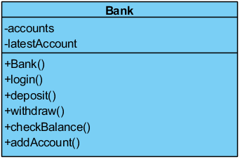
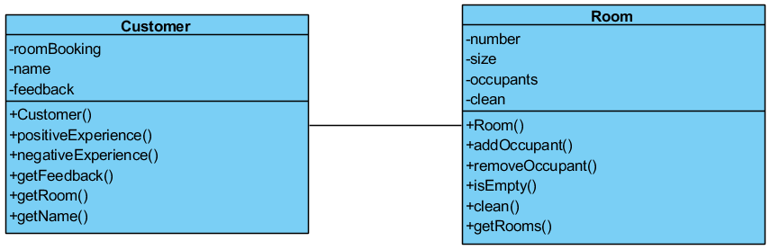
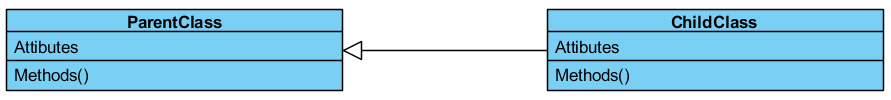
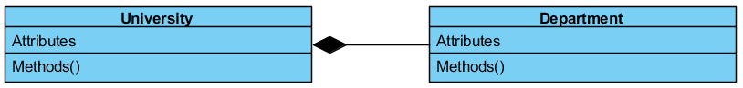
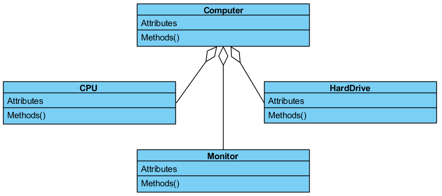
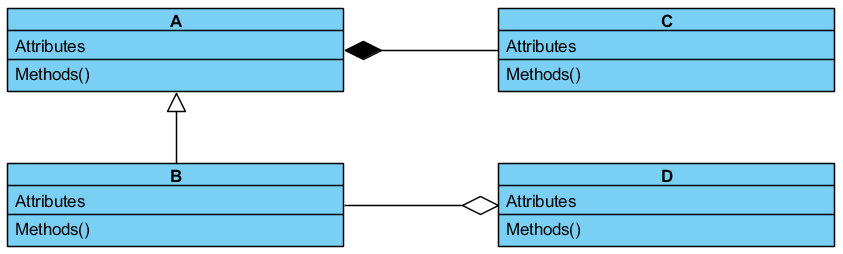

5. Class Relationships |
| In this chapter you will learn: |
|---|
|
A very important aspect of object-oriented programs is the relationships between different objects in the system. There are many different types of relationship in object-oriented programs, and as a program gets larger in scope, it can be difficult to understand the relationships between different classes. One way to help with this is by using Unified Modelling Language (UML) class diagrams – visualisations that show the classes, attributes, methods and relationships that form systems.
In a UML class diagram, the following symbols represent the following visibility and scope properties that an attribute or a method may have:
Classes are defined in UML diagrams as follows:

Take, for example, the Bank class from Task 1:
A UML class diagram would represent the Bank class as:

UML class diagrams can sometimes include the parameters with the methods (e.g. ‘withdraw(number)’), but this is not strictly necessary; therefore, you can choose whether or not to include the parameters, depending on how useful they are for understanding the system.
UML class diagrams can also show association between classes. For example, in the program for Task 2, the customer class is associated with the room class because there is a relationship between rooms and customers (i.e. customers have bookings for certain rooms, and each room can contain different customers). This is demonstrated by a line connecting these classes in the diagram as follows:

As well as general associations, UML class diagrams can include inheritance relationships between classes:

In a UML class diagram, a child class does not need to display the methods and attributes that it inherits from its parent class, although it can be helpful to display any inherited methods that have been overridden.
Another type of association between classes that is often seen is called composition. Composition is where one composite object is formed from a collection of different component objects, where each of these component objects can only exist as part of a composite object. For example, a university is formed by a collection of different departments. Each department is a distinct object, but a department will only exist for as long as the university does. If the university closes, so will all of its departments. This relationship would be shown as follows:

The end of the line with the filled-in diamond is the composite class, and the other end of the line is the component class. In this case, University is a composite class and Department is a component class.
There is another type of association whereby several component objects combine to form another object, known as aggregation. Aggregation is very similar to composition, but the component objects can exist separately from the aggregated object. For example, a computer is made up from a number of separate components. Each component exists as an object in its own right; therefore, if you disassemble the computer, the components will continue to exist even though the computer no longer does. This relationship would be shown as follows:

The end of each line with the hollow diamond is the aggregation class, and the other ends of the lines are the component classes. In this case, Computer is an aggregated class, while CPU, Monitor and HardDrive are component classes.
There is not always a clear distinction between composition and aggregation. For example, is the relationship between lecturers and universities a composition, as a lecturer is no longer a lecturer if they have no university, or is it an aggregation, because a lecturer still exists as a person without a university? The answer depends on whatever model is most useful for the system that you are designing.
When designing an object-oriented program, there are some basic principles that you should keep in mind:
| Q1 | Explain what UML class diagrams are and why they are used. (2 marks) |
|---|---|
| Q2 | State the similarity between composition and aggregation. (1 mark) |
| Q3 | Explain the difference between composition and aggregation. (2 marks) |
| Q4 | Use the UML class diagram below to answer the questions that follow: 
|
|